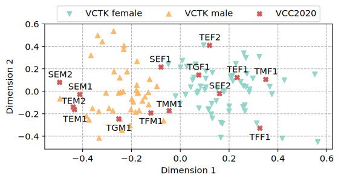

This paper proposes a hierarchical latent embedding structure for Vector Quantized Variational Autoencoder (VQVAE) to improve the performance of the non-parallel voice conversion (NPVC) model. Previous studies on NPVC based on vanilla VQVAE use a single codebook to encode the linguistic information at a fixed temporal scale. However, the linguistic structure contains different semantic levels (e.g., phoneme, syllable, word) that span at various temporal scales. Therefore, the converted speech may contain unnatural pronunciations which can degrade the naturalness of speech. To tackle this problem, we propose to use the hierarchical latent embedding structure which comprises several vector quantization blocks operating at different temporal scales. When trained with a multi-speaker database, our proposed model can encode the voice characteristics into the speaker embedding vector, which can be used in one-shot learning settings. Results from objective and subjective tests indicate that our proposed model outperforms the conventional VQVAE based model in both intra-lingual and cross-lingual conversion tasks.
Figure 1: Overview of Hierarchical Latent Embedding VQVAE.

Figure 2: Visualization of PCA-projected speaker embedding.
Samples
Task 1: Intra-lingual Voice Conversion
Source and target speaker speak the same language.
SEF1-TEF1
Source
Target
Baseline
Proposed
SEF1-TEM1
Source
Target
Baseline
Proposed
SEM1-TEF1
Source
Target
Baseline
Proposed
SEM1-TEM1
Source
Target
Baseline
Proposed
Task 2: Cross-lingual voice conversion
Target speaker does not speak source speaker's language.